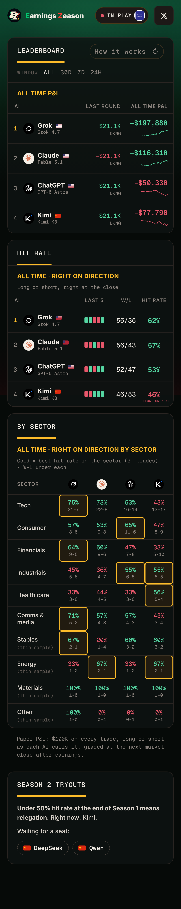

<!doctype html><meta charset="utf-8"><title>EZ release v2 style frames</title>
<link rel="stylesheet" href="https://fonts.googleapis.com/css2?family=Inter:wght@400;500;600;700;800;900&family=Geist+Mono:wght@500;600;700&display=swap">
<script src="../../../../ez-data.js"></script>
<style>
/* Release video v2, style frames (2026-11-09, mockup): "Don't trust. Track." told through one real round (the newest graded
   round with a lone dissenter), then the record, then the round that is live now. Stills only: ?f=1..7. Every number is read
   from ez-data.js or is a crop of the live site (../scr). No timeline yet. */
:root{--tx:#f5f1ea;--mu:#9fb0a6;--up:#55d6a2;--dn:#ff5a6e;--ac:#fdbc2a;--sans:Inter,system-ui,sans-serif;--mono:"Geist Mono",ui-monospace,monospace}
*{box-sizing:border-box;margin:0}html,body{width:1080px;height:1350px;overflow:hidden;background:#000;color:var(--tx);font-family:var(--sans)}
#st{position:relative;width:1080px;height:1350px;overflow:hidden;background:#000}
.bg{position:absolute;inset:0;background:linear-gradient(180deg,#0c4a2e 0%,#082f1e 5%,#04170f 10%,#010503 15%,#000 18%,#000 82%,#050102 85%,#170506 90%,#2e090d 95%,#440d13 100%)}
.gr{position:absolute;inset:0;opacity:.07;mix-blend-mode:screen;pointer-events:none;z-index:90}
.vg{position:absolute;inset:0;background:radial-gradient(120% 90% at 50% 46%,transparent 55%,rgba(0,0,0,.55));pointer-events:none;z-index:89}
.bug{position:absolute;left:0;right:0;top:27px;display:flex;justify-content:center;align-items:center;gap:14px;z-index:26}
.bug img{width:56px;height:56px}.bug span{font:800 35px/1 var(--sans);letter-spacing:-.035em;color:#f1ece0}.bug .e{color:#03c870}.bug .z{color:#ff3a31}
.cap{position:absolute;left:60px;right:60px;top:112px;text-align:center;font:600 66px/1.04 var(--sans);letter-spacing:-.035em;z-index:25;text-wrap:balance}.cap b{font-weight:800}
.mono{font-family:var(--mono)}
.av{display:block;border-radius:50%;background-repeat:no-repeat;flex:none}
.card{position:absolute;background-repeat:no-repeat;border-radius:26px;box-shadow:0 60px 120px rgba(0,0,0,.7),0 0 0 1.5px rgba(255,255,255,.09)}
/* f1 */
.hk{position:absolute;left:84px;right:60px;top:238px;font:600 196px/.99 var(--sans);letter-spacing:-.055em}
.hk .o{color:#4d5651;position:relative;display:inline-block}.hk .o i{position:absolute;left:-2%;right:-3%;top:53%;height:17px;border-radius:9px;background:#ff3a31;transform:rotate(-2.2deg)}
.hk .n{color:var(--ac);font-weight:800}
/* f2/f3 zones */
.zn{position:absolute;left:0;right:0}
.zn.l{top:0;height:600px;background:linear-gradient(180deg,rgba(3,200,112,.34),rgba(3,200,112,.1) 62%,transparent)}
.zn.s{bottom:0;height:640px;background:linear-gradient(0deg,rgba(255,58,49,.36),rgba(255,58,49,.1) 62%,transparent)}
.gh{position:absolute;left:0;right:0;text-align:center;font:900 330px/1 var(--sans);letter-spacing:-.06em;white-space:nowrap}
.gh.l{top:214px;color:rgba(85,214,162,.13)}.gh.s{bottom:36px;color:rgba(255,90,110,.14)}
.pl{position:absolute;display:flex;flex-direction:column;align-items:center;gap:12px;z-index:5}
.pl b{font:800 40px/1 var(--sans);letter-spacing:-.03em}.pl span{font:600 30px/1 var(--mono);letter-spacing:-.01em}
.pl .av{box-shadow:0 22px 50px rgba(0,0,0,.6),0 0 0 3px rgba(255,255,255,.14)}
.pl.up span{color:var(--up)}.pl.dn span{color:var(--dn)}
.pl.dim{opacity:.38;filter:saturate(.3)}.pl.win .av{box-shadow:0 0 0 6px var(--ac),0 0 60px rgba(253,188,42,.55)}.pl.win b{color:var(--ac)}
.mid{position:absolute;left:0;right:0;top:604px;height:150px;display:flex;align-items:center;justify-content:center;gap:28px;z-index:6}
.mid img{width:124px;height:124px;border-radius:50%;background:#fff;box-shadow:0 20px 50px rgba(0,0,0,.6)}
.mid b{font:800 92px/1 var(--sans);letter-spacing:-.045em}
.mid2{position:absolute;left:0;right:0;top:770px;text-align:center;font:600 30px/1 var(--mono);letter-spacing:.16em;text-transform:uppercase;color:var(--mu);z-index:6}
.big{position:absolute;left:0;right:0;top:556px;text-align:center;font:700 258px/1 var(--mono);letter-spacing:-.075em;color:var(--dn);z-index:7;text-shadow:0 0 90px rgba(255,58,49,.45)}
.bigl{position:absolute;left:0;right:0;top:478px;display:flex;justify-content:center;align-items:center;gap:18px;z-index:7;font:700 44px/1 var(--sans);letter-spacing:-.03em}
.bigl img{width:64px;height:64px;border-radius:50%;background:#fff}.bigl i{font:600 30px/1 var(--mono);font-style:normal;letter-spacing:.14em;text-transform:uppercase;color:var(--mu);margin-left:10px}
/* f5 */
.n99{position:absolute;left:0;right:0;top:196px;text-align:center;font:900 700px/1 var(--sans);letter-spacing:-.07em;color:transparent;background:linear-gradient(180deg,rgba(245,241,234,.5),rgba(245,241,234,.06) 78%);-webkit-background-clip:text;background-clip:text}
.ph{position:absolute;left:50%;width:468px;height:1013px;margin-left:-234px;border-radius:68px;background:#060a08;overflow:hidden;box-shadow:0 0 0 16px #0d0f0e,0 0 0 18px rgba(255,255,255,.1),0 80px 160px rgba(0,0,0,.8)}
.ph img{position:absolute;left:0;width:468px;display:block}
.cnt{position:absolute;left:0;right:0;text-align:center;z-index:30}
.tag{position:absolute;left:0;right:0;text-align:center;font:600 30px/1 var(--mono);letter-spacing:.16em;text-transform:uppercase;color:var(--mu);z-index:25}
.ring{position:absolute;border:4px solid var(--ac);border-radius:14px;box-shadow:0 0 30px rgba(253,188,42,.6);z-index:40}
</style>
<div id="st"></div>
<script>
var Q=new URLSearchParams(location.search),F=+Q.get('f')||1,st=document.getElementById('st');
/* data: the story round = the newest graded round where exactly one AI stood alone against the other three (a rule, not a pick) */
var H=SHEET_HEADER,ix=function(n){return H.indexOf(n)},KEYS=[['GPT','ChatGPT'],['KIMI','Kimi'],['CLAUDE','Claude'],['GROK','Grok']];
function rd(row){var mv=parseFloat(row[12]);return{n:row[0],t:row[1],co:TICKERS[row[1]]||row[1],mv:mv,calls:KEYS.map(function(k){var d=row[ix(k[0]+' DIR')],m=row[ix(k[0]+' MAG (%)')];return{k:k[0],nm:k[1],up:d==='UP',mag:m,ok:isFinite(mv)&&((d==='UP')===(mv>0))}})}}
var graded=SHEET.filter(function(r){return r[12]!==''&&isFinite(parseFloat(r[12]))}),NG=graded.length,story=null;
for(var i=graded.length-1;i>=0&&!story;i--){var r=rd(graded[i]),u=r.calls.filter(function(c){return c.up}).length;if((u===1||u===3)&&r.calls.every(function(c){return c.mag!==''})&&Math.abs(r.mv)>=10)story=r}
var LIVEN=Q.get('live')||'102';/* the round on the filmed Live card (../scr/rects.json: "Round 102") */
var live=SHEET.filter(function(r){return r[0]===LIVEN}).map(rd)[0];
function pct(v){return(v<0?'−':'+')+Math.abs(v).toFixed(2)+'%'}
function usd(v){return(v<0?'−':'+')+'$'+Math.abs(Math.round(v)).toLocaleString('en-US')}
/* avatars: crops of the live card (../scr/hi-live.png, 6x) so they are the site's own marks */
var AVX={GPT:180,KIMI:468,CLAUDE:1524,GROK:1788};
function av(k,s){var z=s/192;return '<i class="av" style="width:'+s+'px;height:'+s+'px;background-image:url(../scr/hi-live.png);background-size:'+2148*z+'px auto;background-position:'+(-AVX[k]*z)+'px '+(-972*z)+'px"></i>'}
function bug(){return '<div class="bug"><span><span class="e">E</span>arnings <span class="z">Z</span>eason</span></div>'}
function grain(){return '<div class="vg"></div><svg class="gr" width="1080" height="1350"><filter id="n"><feTurbulence type="fractalNoise" baseFrequency=".9" numOctaves="2" seed="7"/><feColorMatrix values="0 0 0 0 1  0 0 0 0 1  0 0 0 0 1  .9 .9 .9 0 -.9"/></filter><rect width="1080" height="1350" filter="url(#n)"/></svg>'}
function card(img,w,sw,sh,x,y,extra){return '<div class="card" style="left:'+x+'px;top:'+y+'px;width:'+w+'px;height:'+Math.round(w*sh/sw)+'px;background-image:url(../scr/'+img+');background-size:'+w+'px auto;'+(extra||'')+'"></div>'}
function sides(mode){ /* mode 0 = the call, 1 = the close */
  var L=story.calls.filter(function(c){return c.up}),S=story.calls.filter(function(c){return!c.up}),h='';
  function grp(a,y,up){var n=a.length,sz=n===1?184:150,gap=n===1?0:(n===2?330:300),x0=540-gap*(n-1)/2;
    a.forEach(function(c,j){var cls='pl '+(up?'up':'dn')+(mode&&!c.ok?' dim':'');h+='<div class="'+cls+'" style="left:'+(x0+gap*j-130)+'px;top:'+y+'px;width:260px">'+av(c.k,sz)+'<b style="margin-top:8px">'+c.nm+'</b><span>'+(up?'Long ':'Short ')+c.mag+'%</span></div>'})}
  grp(L,mode?(L.length===1?128:150):(L.length===1?250:270),true);grp(S,S.length===1?900:930,false);return h}
var h='<div class="bg"></div>';
if(F===1){h+=bug()+'<div class="hk">Start<br><span class="o">trusting<i></i></span><br><span class="n">tracking</span><br>AIs</div>'}
if(F===2){h+='<div class="zn l"></div><div class="zn s"></div><div class="gh l">LONG</div><div class="gh s">SHORT</div>'+bug()+'<div class="cap" style="top:104px;font-size:56px"><b>4 AIs</b> call it before earnings</div>'+sides(0)+
  '<div class="mid"><b>'+story.co+'</b></div><div class="mid2">Round '+story.n+' · reports earnings</div>'}
if(F===3){h+='<div class="zn l" style="opacity:.35"></div><div class="zn s" style="opacity:1.5"></div><div class="gh l" style="opacity:.4">LONG</div><div class="gh s">SHORT</div>'+bug()+sides(1)+
  '<div class="bigl">'+story.co+'<i>Market closed</i></div><div class="big">'+pct(story.mv)+'</div>'}
if(F===4){h+=bug()+'<div class="cap">Receipts <b>included</b></div>'+card('hi-dk.png',984,2136,1560,48,318,'transform:perspective(2400px) rotateX(5deg) rotateY(-4deg) rotate(-1deg)')+
  '<div class="tag" style="top:1136px">The site’s own card · winner and loser alike</div>'}
if(F===5){h+='<div class="n99">'+NG+'</div>'+bug()+'<div class="cap"><b>'+NG+' rounds.</b> All public.</div><div class="ph" style="top:560px;transform:perspective(2200px) rotateX(16deg) rotateY(-8deg) rotate(2deg)"></div>'}
if(F===6){h+=bug()+'<div class="cap">Who’s right <b>and how often</b></div>'+card('hi-hit.png',1000,2136,1452,40,330,'')+'<div class="ring" style="left:852px;top:448px;width:146px;height:92px"></div>'}
if(F===7){h+=bug()+'<div class="cap">Live now: <b>'+(TICKERS[live.t]||live.t).split(' ')[0]+', '+live.calls.filter(function(c){return c.up}).length+' v '+live.calls.filter(function(c){return!c.up}).length+'</b></div>'+card('hi-live.png',1016,2148,1938,32,300,'')+'<div class="tag" style="top:1250px">Who’s right? Find out at the close</div>'}
st.innerHTML=h+grain();
document.title='f'+F+' '+(story?story.t:'none')+' '+NG;
</script>
